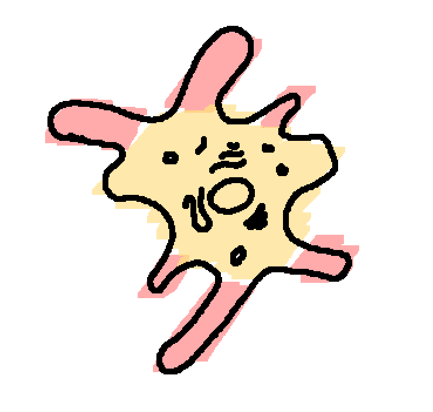
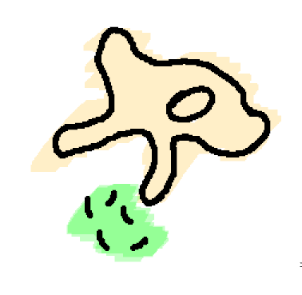
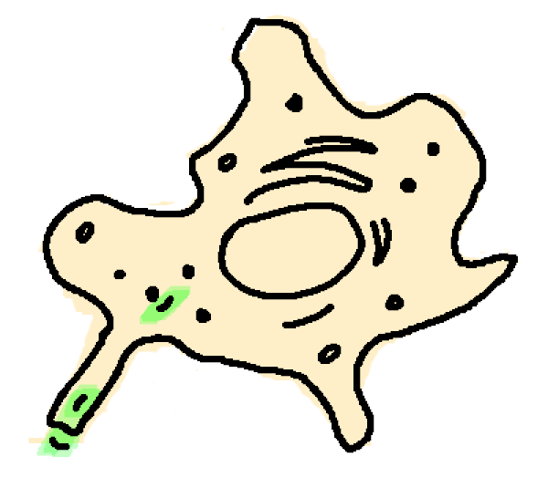

Иммунная система
Ваша иммунная система - это вторая, по сложности, систем человеческого тела. На первом месте, конечно же, стоит ваша нервная система. Однако иммунитет (хоть более правильно сказать иммуная система) не отсутпает по запутаности и неизученности. Но чтобы понять ее не нужно быть гением. Здесь рассказывается о самых важных клетках вашей иммуной системы.
Макрофаг: носорог тела

Одна из самых больших клеток вашего организма - это макрофаг. Макрофаг имеет амебоидный вид, т.е. у макрофаг есть шупальца или "псевдоподы". Благодаря этим щупальцам макрофаг может хватать бактерий и вирусов. Но обо всем по порядку.
На картинке справа представлен макрофаг. Красным выделенны его псевдоподы (щупальца). Макрофаг - это ваш солдат. Самый обычный, ничем не отличающийся. В данный момент, миллионы макрофагов патрулируют разные части вашего тела. В случае инфекции, они первыми придут на помощь и незамедлительно начнут пожирать бактерий и вирусов.
Как именно макрофаг "пожирает" микробов? Очень просто, в буквальном смысле!  В начале, макрофаг находит врагов, после чего он растягивает свои "щупальца" и хватается за микробов. Однако, большинство патогенных микробов "скользкие" и поэтому нашему солдату не сразу удаается за них хорошенько зацепиться. После нескольких неудачных попыток, макрофаг хваатется за бактерию и проглатывает ее в свою внутреннюю мембрану. После того как бактерия попадает в цитопламу макрофага, ее обвалакивает специальная везикула - небольшой мещочек который отделяет вещества от внутренней среды клетки. Бактерия никак не может двигаться, к ее везикуле подплывают лизосомы, в которых находится кислота. Бактерия расстворяется и расщепляется на отдельные компоненты - белки, углеводы и жиры. Часть полезных веществ макрофаг переваривает, остаток выбрасывает наружу для того, чтобы ускорить восстановление "гражданских" или соматических клеток.
Нейтрофил: дикарь на поле боя
 К полю битву подспевает подмога в виде нейтрофилов. Нейтрофилы, в сравнении с огромными макрофагами, довольно малы. Их размер составляет в среднем 12-15 микрометров (макрофаг же 21 микрометр). Однако эти солдаты невероятно опасны, настолько, что они погибают естественным путем (апоптозом) несколько дней после их рождения. Это заложенно в их ДНК для того, чтобы защитить наш собственный организм. Но почему они настолько опасны? Не уж то они могут убить и ваши клетки?
К полю битву подспевает подмога в виде нейтрофилов. Нейтрофилы, в сравнении с огромными макрофагами, довольно малы. Их размер составляет в среднем 12-15 микрометров (макрофаг же 21 микрометр). Однако эти солдаты невероятно опасны, настолько, что они погибают естественным путем (апоптозом) несколько дней после их рождения. Это заложенно в их ДНК для того, чтобы защитить наш собственный организм. Но почему они настолько опасны? Не уж то они могут убить и ваши клетки?
Чтобы разобраться, давайте посмотрим на строение нейтрофила. Нейтрофил, как и все клетки вашего организма, содержит определенные органеллы. Эти органеллы могут быть большими, как например ядро, или невероятно маленькими, как рибосомы, которые отвечают за производство белков. Но нейтрофил также наделен особым видом органелл - гранулами. Эти гранулы, на подобии маленьких мещочков, содержат кислоту, наподобие вашей желудочной, которую нейтрофил использует для уничтожения патогенов.
Кислота разъедает не только микробов, но и ваши собственные, мирные клетки, что приводит к значительным повреждениям на поле битвы.